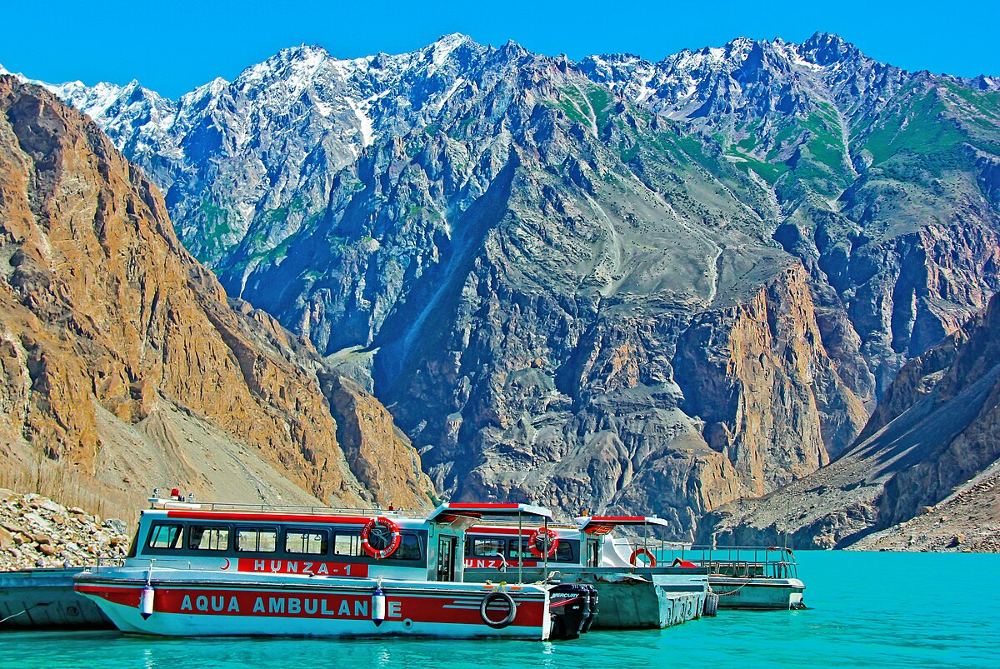
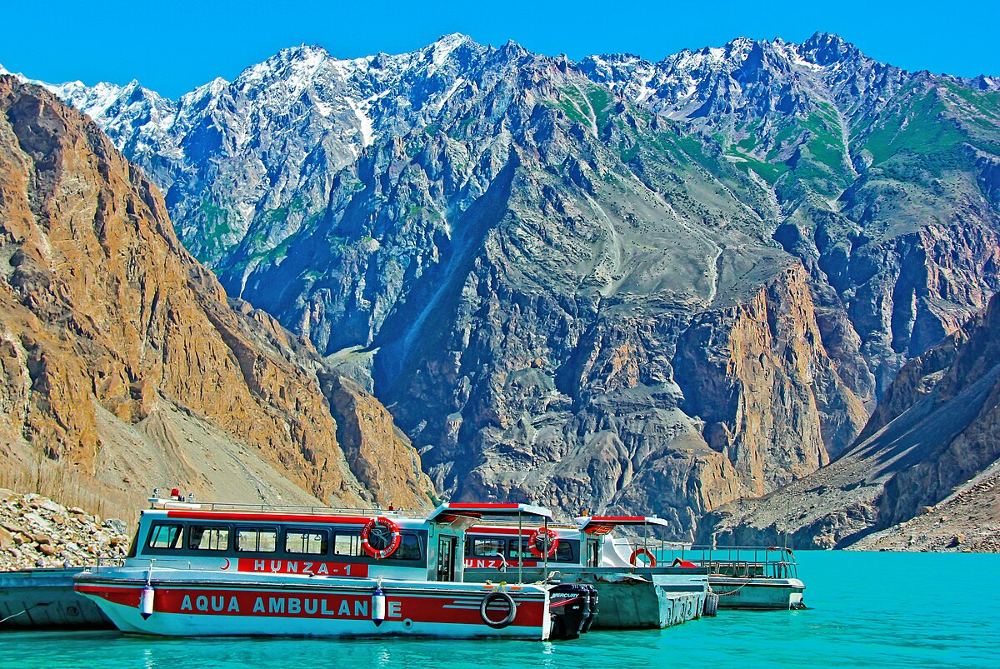
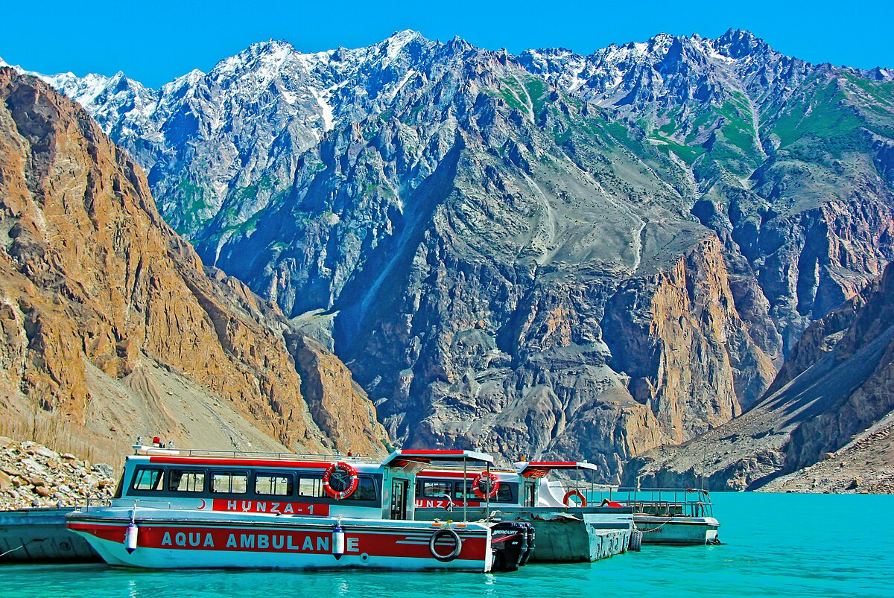

Gilgit-Baltistan has been at the crossroads of various civilizations for centuries. Not so long ago, it was the central theatre of the “great game in which the erstwhile empires maneuvered for strategic supremacy while caravan of traders, sundry adventurers and explorers traversed the serpentine coil of tricky mountain paths that came to be known as “silk route” . The isolation associated with the Karakoram Mountains ensured that Gilgit-Baltistan, developed and preserved its unique history, cultural values and traditional political identity. The territory of Gilgit-Baltistan consists of seven districts namely Gilgit, Ghezir, Hunza Nagar, Diamar, Astore, Baltistan (Skardu) and Ghanche.
